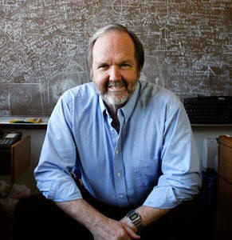

|  |
|
||||
Education Univ. of Pennsylvania Ph.D. 1968 Rice University B.A., B.S., M.S. 1962, 1963,1964 Interim Chair Research
& Teaching Memberships
|
Following postdoctoral work from 1969 to 1970, Professor Arthur joined the faculty at Washington University, where he is now a Professor of Electrical and Systems Engineering and a Professor of Biomedical Engineering. Studies carried out by Professor Arthur in collaboration with cardiologists at the Washington University School of Medicine are aimed at identifying adults who have had a heart attack and are at increased risk of having a subsequent attack. Even when these patients' hearts are beating normally, there are changes in their electrocardiograms that indicate they are at increased risk of developing a new life-threatening arrhythmia. Professor Arthur and his colleagues have identified subtle changes that occur in the spatial distribution, spectral characteristics, as well as in the waveforms of the electrocardiograms from patients at risk. Risk of arrhythmia occurrence is determined from the analysis of torso shape and from the nature and distribution of body-surface electrocardiograms. In another series of studies, one aimed at improving ultrasonic techniques for the detection and staging of cancer, Professor Arthur has devised synthetic-focus algorithms for medical ultrasonic imaging. In contrast to conventional imaging methods, these ellipsoidal-backprojection algorithms permit images produced by an array of transducers to be in focus at each picture element. Adaptive-focus techniques are being developed to improve image focus and simultaneously extract a velocity map of the tissue being imaged. In a joint effort, Professors Arthur and William D. Richard are developing special-purpose computer architectures to support real-time ellipsoidal backprojection imaging. This imaging system will use massive parallelism and will be based on custom CMOS VLSI circuits currently under development. Professor Arthur is a fellow of the American Institute for Medical and Biological Engineering. He was a member of the Committee on the Safe Use of Electricity in Health Care Facilities of the National Fire Protection Association, which writes the National Electric Code for hospitals. He has presented short-course tutorials on the safe use of electricity in hospitals. He was a member of the Editorial Committee of the Annual Reviews of Biophysics and Bioengineering and a member of the Editorial Board of the Journal of Clinical Engineering. |
||||
Undergraduate Research & Graduate Independent Study
|
|
||||
Selected Publications |
R. M. Arthur, "Errors in Forward and Inverse Electrocardiography from Reducing a Full-Body Surface to a Torso Model", Medical & Biological Engineering & Computing, in review. <abstract> D. Basu, R. M. Arthur, Y. Guo and J. W. Trobaugh, "3D Temperature Imaging during Non-Uniform Heating using Ultrasonic Backscattered Energy", IEEE Transactions on Ultrasonics, Ferroelectrics, and Frequency Control, in review. <abstract>
R. M. Arthur
and S. B. Marrus, “Inverse Electrocardiographic Errors from Heart &
Torso Model Construction”, International Journal of
Bioelectromagnetism, in press. R. M. Arthur and W Zhao,”System for 2D Ultrasonic Temperature Imaging (TI) based on the change in backscattered energy in real-time with or without motion compensation, Ultrasonic Imaging, October 2015; vol. 37(4), pp. NP15, 2015. R. M. Arthur and W Zhao, “Comprehensive System for Initial, Real-Time Estimation and Refined 2D Ultrasonic Thermometry based on the Change in Backscattered Energy, 40th International Symposium on Ultrasonic Imaging and Tissue Characterization, Washington, DC., 22-24 June, 2015. R. M. Arthur and S. B. Marrus , “Use of ECHO to Obtain Cardiac Anatomy for Inverse ECG Solutions”, The 10th International Conference on Bioelectromagnetism, Tallinn, Estonia, 16-18 June, 2015. R. M. Arthur, C. D. Holmes and Weiyuan Zhao, "Real-Time Ultrasonic Thermometry Based on the Change in Backscattered Energy", 31st Society for Thermal Medicine Meeting, Minneapolis, MN, 6-10 May 2014. <abstract> <pdf> R. M. Arthur, J. W.
Trobaugh,
Y. Guo, and B. Zhao, "Signal-to-noise improvement in ultrasonic
thermometry based on the change in backscattered energy", 38th
International Symposium on Ultrasonic Imaging and Tissue
Characterization, Washington, D.C., 10-12 June 2013. J. I. Laughner, F. S. Ng, M. S. Sulkin, R. M. Arthur and I. R. Efimov, "Processing and analysis of cardiac optical mapping data obtained with potentiometric dyes," Am J Physiol: Heart Circ Physiol, 303:H753-H765, 2012. <abstract> R. M. Arthur, Y. Lin, S. Wang and J. W. Trobaugh, "Effects of Action Potential Duration on the Electrocardiogram in Type II Diabetes", International Journal of Bioelectromagnetism, December 2012. http://ijbem.k.hosei.ac.jp/2006-/volume14/number3/ijbem_vol14_no3_pp141-153.pdf <abstract> R. M. Arthur, "Temperature Imaging Using Ultrasound", chapter 13 in Physics Of Thermal Therapy, Fundamentals and Clinical Applications, Editor: E. G. Moros, Series: Imaging In Medical Diagnosis And Therapy (William R. Hendee, Series Editor), Taylor & Francis, 2012. <abstract> R. M. Arthur and JW
Trobaugh, "Electrocardiographic Textbooks Based on Template Hearts
Warped using Ultrasonic Images", IEEE Transactions on Biomedical
Engineering, in press, 2012.<abstract> R. M. Arthur, D.
Basu, Y. Guo, J. W. Trobaugh, W. L. Straube and E. G. Moros,
"Temperature Imaging during NonUniform Tissue Heating with
Ultrasonic Backscatter Energy using Self-Calibration", 35th
International Symposium on Ultrasonic Imaging and Tissue
Characterization, Washington, D.C., 17-19 May 2010. <abstract> S. Wang and R. M. Arthur, "A New Method for Estimating Cardiac Transmembrane Potentials from the Body Surface", International Journal of Bioelectromagnetism, vol. 11, no. 1, pp. 59 - 63, 2009. <pdf>
R. M. Arthur, S.
Wang, and J. W. Trobaugh, "Changes in Body-Surface
Electrocardiograms from Y. Guo, J. W. Trobaugh, and
R. M. Arthur, "A Framework for Temperature Imaging using the
Change in Backscattered Ultrasonic Signals",
34th International Symposium on Ultrasonic Imaging and Tissue
Characterization, Washington, D.C., 10-12 June 2009. <abstract> D. Basu, R. M. Arthur,
J. W. Trobaugh, Y. Guo, W. L. Straube, "3D Temperature Imaging using
Change in Ultrasonic Backscattered Energy: Estimation of Temperature
during Non-Uniform Heating", 34nd International Symposium on
Ultrasonic Imaging and Tissue Characterization, Washington, D.C.,
10-12 June 2009. <abstract> R. M. Arthur, W. L. Straube, J. W. Trobaugh, and E. G. Moros, "In vivo change in ultrasonic backscattered energy with temperature in motion-compensated images" Int. J. Hyperthermia, Vol. 24, No. 5, pp 389–398, 2008. <abstract>
J. W. Trobaugh, R. M.
Arthur, W. L. Straube and E. G. Moros "A Simulation Model for
Ultrasonic Temperature Imaging Using Change in Backscattered
Energy", Ultrasound in Medicine & Biology,
Vol. 34, No. 2, pp. 289–298, 2008.
<abstract> Debomita Basu, R. M. Arthur and J. W. Trobaugh, "Role of Collagen in the Temperature Dependence of Ultrasonic Backscatter", Memphis Biomedical Imaging Symposium 2007, Memphis, Tennessee, 1-2 November 2007. <abstract><poster> Yuzheng Guo, Jason W. Trobaugh and R. M. Arthur, "Motion Compensation for Temperature Imaging using the Change in Ultrasonic Backscattered Energy", Memphis Biomedical Imaging Symposium 2007, Memphis, Tennessee, 1-2 November 2007.<abstract><poster>
R. M.
Arthur,
J. W. Trobaugh, Y. Guo, W. L. Straube, and E. G. Moros,
"Change in Ultrasonic Backscattered Energy for Temperature Imaging:
Factors Affecting Temperature Accuracy and Spatial Resolution", 32nd International Symposium on Ultrasonic
Imaging and Tissue Characterization, Washington, D.C., 16 May
2007.<abstract><pdf> R. M. Arthur, J. W. Trobaugh, W. L. Straube and E. G. Moros, "Developing Ultrasonic Temperature Imaging to Aid Cancer Treatment" SPIE Newsroom, http://spie.org/x8432.xml, 2007.
R. M.
Arthur,
J. W. Trobaugh, W. L. Straube J. Parry, Y. Guo and E. G. Moros,
"Change in Ultrasonic Backscattered Energy for Temperature Imaging:
Simulation Studies with Multiple Scatterers and Measurements from
In Vivo Images", 31st International Symposium on Ultrasonic
Imaging and Tissue Characterization, Washington, D.C., 24 May
2006.<abstract><pdf> W. L.
Straube,
R. M.
Arthur,
J. W. Trobaugh, J. Parry, Y. Guo and E. G. Moros, "In Vivo
Measurement of Changes in Ultrasonic Backscattered Energy for
Homogeneous (Water Bath) and Heterogeneous (SAHUS) Heating"
Proceedings 2006 Annual Meeting of the Society for Thermal Heating,
Bethesda, MD, 6-8 April 2006, p. 39.
<abstract><pdf> R. M. Arthur, J. W. Trobaugh, W. L. Straube and E. G. Moros, "Temperature Dependence of Ultrasonic Backscattered Energy in Motion-Compensated Images", IEEE Transactions on Ultrasonics, Ferroelectrics and Frequency Control, vol. 52, pp. 1644-1652, 2005. <abstract><pdf> R. M. Arthur, W. L. Straube, J. W. Trobaugh, and E. G. Moros, "Noninvasive Estimation of Hyperthermia Temperatures with Ultrasound", International Journal of Hyperthermia, vol. 21, pp. 589-600, 2005.<abstract> <pdf> R. M. Arthur, W. L. Straube, J. W. Trobaugh, and E. G. Moros, "Recent Advances In Ultrasonic Temperature Imaging Using Changes In Backscattered Ultrasound", 22nd European Society for Hyperthermic Oncology, Graz, Austria, June, 2005. <abstract><pdf> W.L. Straube, J. Parry, E. Moros, J. Trobaugh, and R.M. Arthur, "An In Vivo System for the Determination of the Effect of Temperature on Backscattered Ultrasound Energy in Ultrasonic Images", Society for Thermal Medicine, Bethesda, Maryland, April 1-3, 2005. <abstract><poster> J. W. Trobaugh and R. M. Arthur, "Estimation of Surface Pose with a Physically-Based Ultrasonic Image Model", IEEE Transactions on Ultrasonics, Ferroelectrics and Frequency Control, vol. 51, pp. 1128-1136, 2004. <abstract> <website> D. G. Beetner and R. M. Arthur, "Estimation of Heart-Surface Potentials Using Regularized Multipole Sources", IEEE Transactions on Biomedical Engineering, vol. 51, pp. 1366-1373, 2004. <abstract><pdf>R. M. Arthur, J. W. Trobaugh, W. L. Straube and E. G. Moros, "3D Temperature Dependence of Ultrasonic Backscattered Energy in Images Compensated for Apparent Tissue Motion", 9th International Congress on Hyperthermic Oncology, St. Louis, April, 2004. <abstract> <poster>J. W. Trobaugh, R. M. Arthur, W. L. Straube and E. G. Moros, "Effects of scatterer populations on temperature dependence of backscattered ultrasonic energy ", Poster, 9th International Congress on Hyperthermic Oncology, St. Louis, April, 2004. <abstract> <poster>M. E. Cain, R. M. Arthur and J. W. Trobaugh, "Detection of the Fingerprint of the Electrophysiological Abnormalities the Increase Vulnerability to Life-Threatening Ventricular Arrhythmias", J. of Interventional Cardiac Electrophysiology, vol. 9, pp. 103-118, 2003. <abstract> R. M. Arthur, J. W. Trobaugh, W. L. Straube, E.G. Moros and S. Sangkatumvong , "Temperature Dependence of Ultrasonic Backscattered in Images Compensated for Tissue Motion", Proceedings of the 2003 International IEEE Ultrasonics Symposium", Honolulu, Hawaii, October 5-8, 2003. <abstract> J. W. Trobaugh, W. L. Straube, R. M. Arthur, E. G. Moros and S. Sangkatumvong, "Apparent Motion and Temperature Dependence of Backscattered Energy in Ultrasonic Images", Poster, 21st Annual Meeting of the North American Hyperthermia Society, Quebec City, Canada, September 10-14, 2003. <abstract> <poster> R. M. Arthur, W. L. Straube, J. D. Starman and E. G. Moros, "Noninvasive Temperature Estimation Based on the Energy of Backscattered Ultrasound," Medical Physics, vol. 30, pp. 1021-1029, 2003. <abstract> J. W. Trobaugh and R. M.
Arthur, "Methods for Using Ultrasound to Generate a Heart Surface for Electrocardiographic Inverse Problems",
International Journal of Bioelectromagnetism, vol. 5, pp. 314-315, 2003.
<abstract>
<journal> W. L. Straube, R. M. Arthur, J. D. Starman, and E. G. Moros, "The Effect of Temperature Change on Backscattered Ultrasound Power," Poster, 44th American Association of Physicists in Medicine Meeting, Montreal, Canada, 16 July 2002. <abstract> <poster> R. M. Arthur, W. L. Straube and E. G. Moros, "Noninvasive Temperature Estimation Based on the Energy of Backscattered Ultrasound", Invited Talk, 20th Annual Meeting of the North American Hyperthermia Society, Reno, Nevada, 20 April, 2002. <abstract> <talk> W. L. Straube, R. M. Arthur, J. D. Starman, and E. G. Moros, "In Vitro Measurement and Analysis of Backscattered Ultrasound and Its Change With Temperature", Poster, 20th Annual Meeting of the North American Hyperthermia Society (NAHS), Reno, Nevada, 22 April 2002. <abstract> <poster> R. M. Arthur, W. L. Straube, J. D. Starman and E. G. Moros, "Estimation of Hyperthemic Temperatures from Backscattered Ultrasonic Energy", 19th Annual Meeting of the North American Hyperthermia Society, San Juan, Puerto Rico, April 2001. <abstract>J. W. Trobaugh and R. M. Arthur, "Representation of Shape in Ultrasonic Images with a Physically-Based Image Model", Proceedings of the IEEE Workshop on Mathematical Methods in Biomedical Image Analysis (MMBIA 2001), pp. 79-86, 2001. <abstract> J. W. Trobaugh and R. M. Arthur,
"A Physically-Based, Probabilistic Model for Ultrasonic Images Incorporating Shape, Microstructure and System Characteristics",
IEEE Transactions on Ultrasonics, Ferroelectrics and Frequency
Control, vol. 48, pp. 1594-1605, 2001. <abstract>
<website> R. M. Arthur, "Representation of Tissue for Pulse-Echo Estimation of Speed of Ultrasound," Donald L. Snyder Workshop, Washington University in St. Louis, Springer-Verlag, in press, 2000. <abstract> M. A. Franklin, A. Mahajan and R. M. Arthur, "Parallel Implementations of 3D Synthetic-Focus Ultrasonic Image Generation using MPI",
Proceedings of the Thirteenth ISCA International Conference on Parallel and Distributed Computing
Systems, vol. 2, pp. 205-212, 2000. <abstract> |
||||
{kind=link}
{kind=link}
{kind=link}